1. Introduction
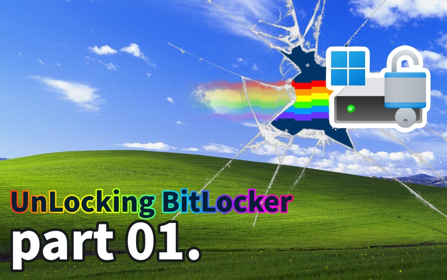
BitLocker is a disk encryption feature built into the Windows operating system designed to protect data by preventing unauthorized access when a device is lost, stolen, or accessed offline. BitLocker uses a combination of XTS-AES and TPM to provide strong key protection and data encryption; however, it does not provide integrity protection for the ciphertext itself. Today, we will understand the AES-XTS mechanism and examine the BitLocker CrashXTS method, a vulnerability that can be discovered through this mechanism.
1.1 Understanding the Boot System
The UEFI firmware reads the signed bootmgfw.efi and BCD (Boot Configuration Data) from the EFI System Partition (ESP). This section is composed of plaintext. Secure Boot validates this boot application and the chain's DBX to establish a root of trust. While the ESP boot components are read, if trust verification fails, the VMK unseal is denied, and the system moves to the recovery path.
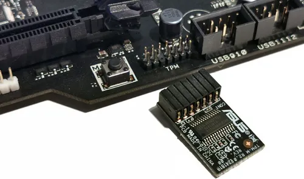
Does the encrypted area only contain user files? No. BitLocker describes Key Protectors and the key hierarchy in the volume metadata. Specifically, it uses a two-layer key design consisting of the VMK (Volume Master Key) and FVEK (Full Volume Encryption Key). The key actually used for block encryption/decryption is the FVEK.
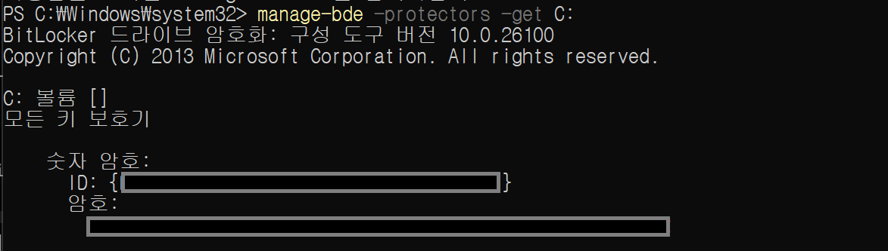
The screenshot shows the output of the manage-bde -protectors -get C: command, which lists the key protectors registered for the C: volume. The "Numerical Password" shown here is one type of protector used to unlock the VMK; it serves as a recovery mechanism when TPM-based unsealing fails in the normal boot path or when the system falls back into recovery mode. In other words, a BitLocker volume does not only contain encrypted data: it also stores, as part of its metadata, information about how the VMK can be recovered and the key hierarchy (VMK -> FVEK), and ultimately relies on the FVEK to perform sector-level encryption and decryption.
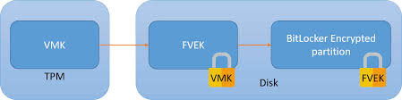
TPM
The TPM is a dTPM (discrete TPM) hardware chip with a secure storage repository that isolates keys and counters inside the chip. It allows secret keys to be released based on boot reliability measurements (PCR - Platform Configuration Registers) to verify if the system has "booted in a trusted state."
BitLocker seals the VMK to specific PCR values. By default, it uses PCR 7 (Secure Boot state, UEFI variables, Boot Manager code) and PCR 11 (BitLocker access control).
- If the boot chain is normal, the TPM allows the VMK to be unsealed.
- If the boot chain has been tampered with, the PCR values change, the unseal fails, and the system moves to the recovery screen.
VMK (Volume Master Key)
The VMK is the parent key that protects the FVEK. If the VMK cannot be legitimately restored, the FVEK cannot be unlocked, and thus the sector plaintext cannot be accessed. The VMK can be wrapped by multiple protectors:
- TPM Protector: Bound to TPM PCRs.
- Recovery Password Protector: A 48-digit numeric recovery key.
- Password Protector: User password.
- TPM+PIN Protector: Combination of TPM and PIN.
FVEK (Full Volume Encryption Key)
The FVEK handles the actual encryption of disk sectors. The targets encrypted by the FVEK include the kernel, drivers, software, and user data. The FVEK is an AES-256 (or AES-128) key. In XTS mode, 512 bits (or 256 bits) are actually used. Half is used for data encryption (K1), and the other half is used for tweak generation (K2)!
1.2 BitLocker Filter Driver Operation Principle
When the kernel loads, the BitLocker filter driver, fvevol.sys, intercepts disk I/O to perform encryption and decryption. Let's see how this is performed!
- When the computer boots,
winload.efiloads the kernel andBOOT_START(0) drivers, andfvevol.sysis loaded together at this stage. (This is before NTFS mounts the system volume). - In the early boot stage, before keys are ready and TPM PCR 7/11 verification hasn't occurred (VMK/FVEK not yet ready),
fvevol.sysoperates in a locked state. At this stage, the boot environment (likebootmgrorwinload) reads the FVE-FS (metadata), performs TPM verification, unseals the VMK, and then decrypts the FVEK. - Only when the VMK is unsealed and the FVEK is decrypted does
fvevolswitch to an unlocked state. From this point on, all data I/O for that volume is transparently encrypted and decrypted via the respective FVEK.
In other words, the flow is: App/Service -> NTFS (ReFS) -> I/O Manager -> [fvevol] -> volmgr/Storage Class -> Port/Miniport (NVMe/SATA) -> Disk.
BitLocker's core encryption method, XTS-AES, encrypts data in disk sector units. It is designed so that each block applies a tweak value (based on sector/offset), ensuring that identical plaintext generates different ciphertext depending on its location.
This design was introduced to mitigate the malleability problem found in CTR/CBC modes, where an attacker could manipulate plaintext by directly manipulating ciphertext. However, today we will look at a case showing that even this XTS structure is not perfectly secure.
2. Windows AES-CBC vs. AES-XTS Operation Modes
2.1 BitLocker Encryption Mode
We mentioned earlier that BitLocker encrypts sector data with the FVEK. To understand the vulnerability we'll explain today, we must focus on the "operation mode used on the disk medium." A hint: a disk is an "access medium that reads and writes to specific locations called sectors." Therefore, BitLocker must use a block cipher operation mode that operates securely even with random access to avoid vulnerabilities.
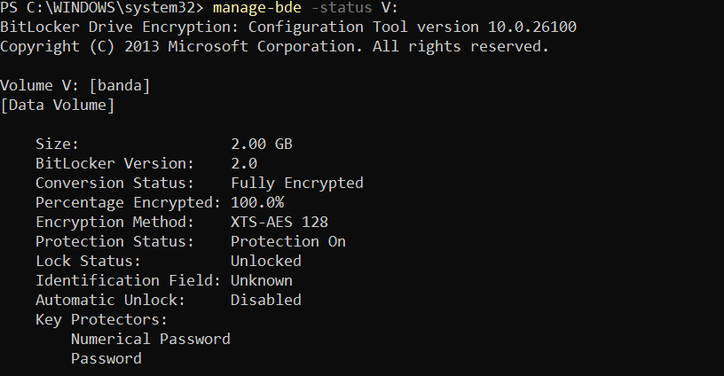
Starting with Windows 11, BitLocker defaults to using AES-XTS instead of the previously used AES-CBC. This is to reduce the attack surface that can structurally occur in the CBC encryption method.
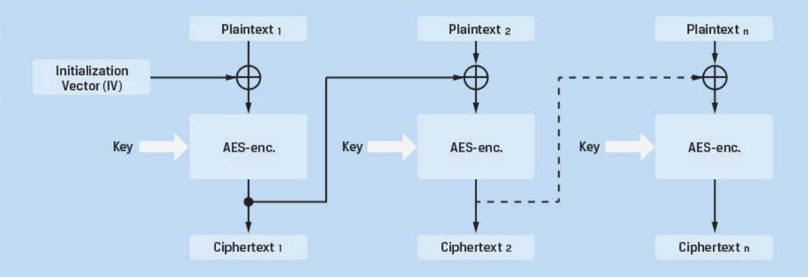
$ C_i = E_K!\left(P_i \oplus C_{i-1}\right) $
$ P_i = D_K!\left(C_i\right) \oplus C_{i-1} $
The CBC encryption method is likely familiar to you. It chains AES blocks together. The points where CBC becomes problematic from a disk perspective are:
-
Chaining Dependency
Because CBC inherently allows the previous block to affect the next block, it is difficult to manage in an environment like a disk where only intermediate blocks are changed. Disks may update only parts of a file, or the OS may update only specific sectors. Independent encryption/decryption per sector is impossible, causing performance degradation.
-
Bit Flipping
As seen in the CBC decryption formula, if an attacker flips a specific bit, the bit at the same position in the decrypted plaintext is flipped in the same way. This means the ciphertext can be manipulated to change the plaintext predictably.
-
IV (Initialization Vector) Management Issues
Each sector requires a unique IV. Using the sector number as an IV creates predictability, while using a random IV requires additional storage space.
Considering this flow, in past CBC-based FDE (Full Disk Encryption), it was theoretically possible for an attacker to modify the ciphertext on the disk bit-by-bit to insert malicious payloads into the bootloader or OS code.
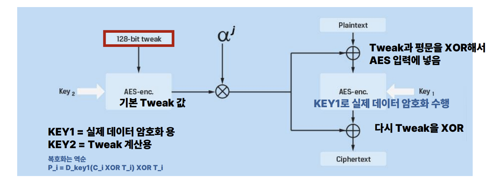
Due to the structural vulnerability of Malleability in CBC mode, the risk of tampering with encrypted boot sectors or critical OS files was raised. Accordingly, starting with TrueCrypt 5.0 in 2008, XTS-AES was pioneered, and Microsoft subsequently adopted XTS-AES as the standard for BitLocker starting with Windows 10 to counter these threats.
Checking the operation of XTS, XTS applies a value called a tweak to each block. This tweak is a value determined by the 'disk location,' usually based on the sector number and the block index within the sector. A disk reads and writes in sectors of sizes like 512B (or 4KB), and since AES is a 16B block, a 512B sector would be divided into 32 blocks. XTS is designed so that a different tweak is applied to each of these 16B blocks.
$ T_i = \mathrm{Tweak}_{K_2}(s, j) $
$ C_i = E_{K_1}!\left(P_i \oplus T_i\right) \oplus T_i $
XTS uses two keys. Key1 is used for the purpose of encrypting and decrypting the actual data, and Key2 is used for generating the tweak containing the data's location information.
Using this XTS mode, even if an attacker manipulates a specific ciphertext block, the non-linearity causes the result to be damaged in a way that is unpredictable and close to random at the 16-byte block level. In other words, sophisticated manipulation, such as changing a specific bit of the next block to a desired value like in CBC, becomes virtually impossible.
2.2 Unresolved Challenges of XTS
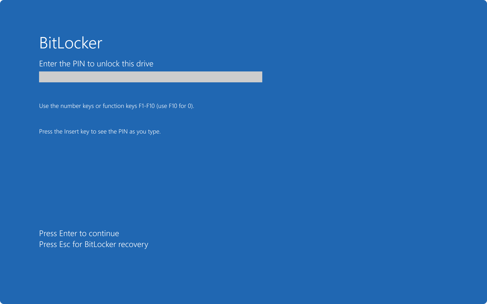
However, XTS still has the following fundamental limitations:
-
Lack of Integrity Protection
XTS makes manipulation results difficult to predict, but it does not provide integrity protection to detect or reject the manipulation itself. If an attacker changes the ciphertext, the system does not detect this tampering to stop the process. The system simply decrypts the tampered data and processes it as broken plaintext (garbage).
-
Granular Tampering Detection
XTS accurately isolates changes to the specific block level. Paradoxically, this offers better granularity than CBC, providing useful clues for identifying the specific location where the modification occurred. An attacker can easily verify "which block has changed" from the perspective of the entire disk.
-
Copy-Paste Attacks
Identical plaintext blocks always generate identical ciphertext in the same sector. An attacker can copy a previous version of the ciphertext from the same sector and overwrite the current version, or copy ciphertext from another sector and paste it.
-
Narrow Block Size
Since XTS operates in 16-byte block units, if the same 16-byte plaintext pattern is repeated, a pattern may also be observed in the ciphertext. This can be used for ciphertext analysis.
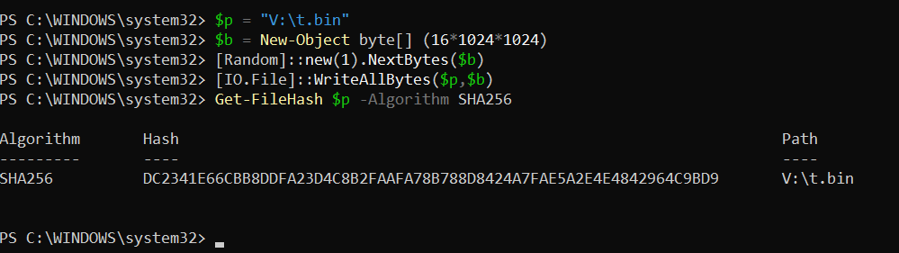
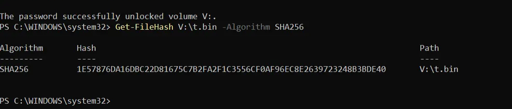
To verify this directly, we conducted a practical experiment to intuitively check the lack of integrity in XTS-AES on a BitLocker volume. First, we created a 16MiB file on a BitLocker-protected volume (V:), output its SHA-256 hash immediately after creation, and recorded it as the baseline. Then, with the volume locked, we directly edited the raw disk area to partially tamper with the 16-byte ciphertext block containing the file. After unlocking the volume again and recalculating the SHA-256 hash of the same file, we confirmed that the hash value had changed compared to the baseline.
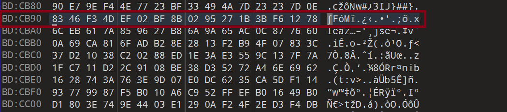
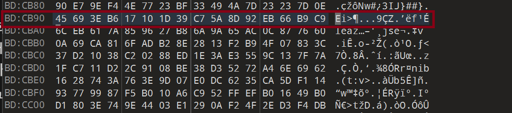
Even if only 1 bit is changed in the ciphertext, in XTS results, changing 1 bit randomizes the entire corresponding 16-byte block. At the same time, we can confirm that this has no effect on other neighboring blocks.
Why Windows Cannot Switch to AEAD
However, there are limitations for Windows to completely switch to a form of disk encryption that attaches integrity, such as MAC or AEAD.
- Full System Redesign Required: Adding integrity is not just a matter of changing the encryption mode; it requires a complete redesign of the system architecture regarding how the Windows boot, recovery, file system, and crash dump paths handle integrity failures.
- Performance Overhead: Adding a MAC to every sector has a significant impact on storage space and I/O performance.
- Partial Write Problem: File systems often modify only parts of a sector, but AEAD operates on the whole unit, making this complex to handle.
- Recovery Scenarios: If a part of the disk is damaged, integrity verification failure could make the entire volume unmountable.
Due to concerns about availability degradation, where mounting the entire volume could be refused because of strict verification failures caused by small data corruption, it is still difficult to prepare a complete countermeasure.
2.3 CASE: CVE-2025-21210 (CrashXTS)
The property of XTS that "the same sector is encrypted with the same tweak" means that given the same sector number and the same FVEK, the same plaintext is always converted to the same ciphertext. Even if rebooted multiple times, the ciphertext remains constant as long as the sector number does not change. Also, while it is difficult to obtain a Write primitive in XTS, we can cause the system operation flow to fail via Corrupt. This point is explained by CVE-2025-21210, known as CrashXTS.
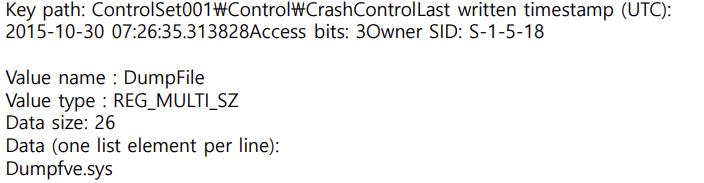
When BitLocker processes normal runtime I/O in Windows, XTS-AES encryption/decryption is applied sector-by-sector via the fvevol.sys stack. However, in special paths that write directly to the disk with a minimal dump stack, such as Crash Dump/Hibernation, we cannot assume that all filters in the normal I/O path are operating. Because of this, BitLocker separately loads a dump filter called dumpfve.sys designed to maintain encryption even when dump/hibernation data is written to the disk.
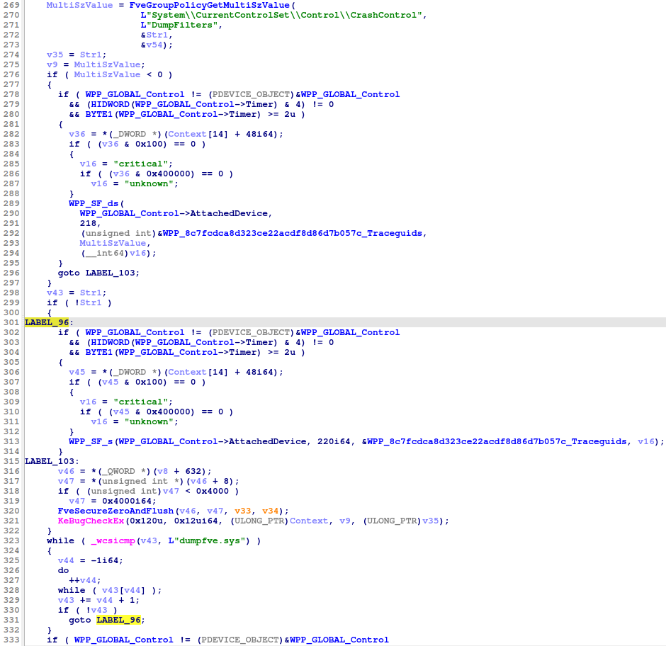
This flow is also confirmed in decompiled code. The function goes through the process FveGroupPolicyGetMultiSzValue() to read the DumpFilters value under SYSTEM\CurrentControlSet\Control\CrashControl, and iterates through the list to check if dumpfve.sys is included via _wcsicmp(). Furthermore, if dumpfve.sys is missing or parsing fails, it aborts immediately. Normally, the flow prevents dump/hibernation from proceeding if the encryption dump filter is missing.
However, the problem is that XTS-based disk encryption does not provide integrity. By using the properties of XTS to manipulate a specific ciphertext block and break the 16-byte plaintext block, one can damage the block containing the DumpFilters offset inside the Registry Hive. This induces a state where the parser cannot normally locate the DumpFilters entry. In other words, the goal is to induce the failure of the expected operation through this Corrupt.
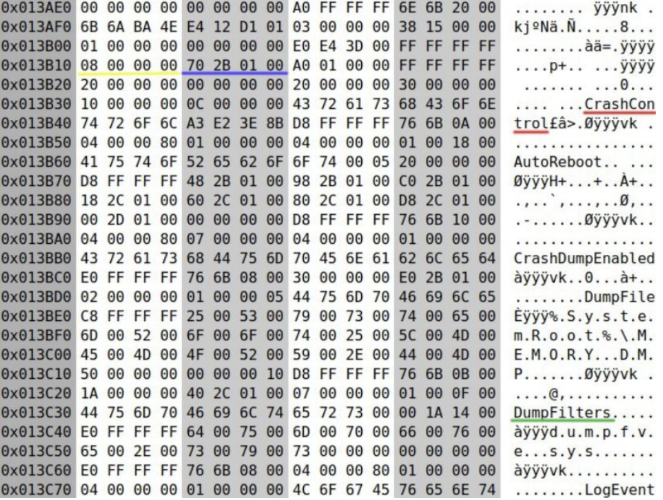
The screen shows the bytes around the ControlSet...\Control\CrashControl key inside the SYSTEM registry hive as Hex values. In the ASCII area on the right, strings like CrashControl, AutoReboot, CrashDumpEnabled, DumpFile, and DumpFilters are visible. This means the key/value names exist as strings inside the actual file.
In XTS, if you manipulate the ciphertext, the plaintext of that 16-byte block is uncontrollably randomized. That is, if you target the 4-byte offset inside the registry hive structure and randomize the 16-byte block containing this field, from the kernel's perspective, it looks as if the DumpFilters value does not exist, and the hive loader enters a state where it cannot find the value list location. And inducing this is our goal!
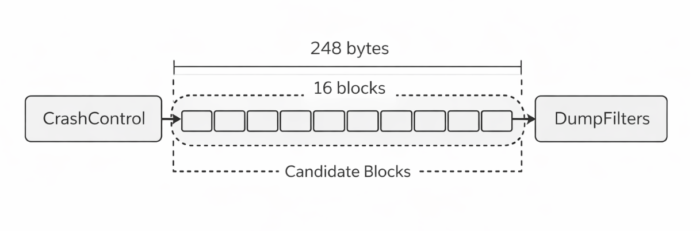
Considering the entire disk, there are a huge number of 16-byte blocks. Since we cannot pick a random block on a multi-GB disk to break DumpFilters, we find that the CrashControl string is near the hive file offset 0x13B330. Then, we can consider a method of keeping only a few dozen surrounding blocks as candidates and breaking them one by one. We confirmed via Hex values that the DumpFilter related structure is located approximately 248 bytes away from the location containing CrashControl. 248 bytes is roughly 15.5 blocks in terms of 16-byte blocks. Therefore, we can target blocks around +0xF0 or +0x100 as candidate blocks.
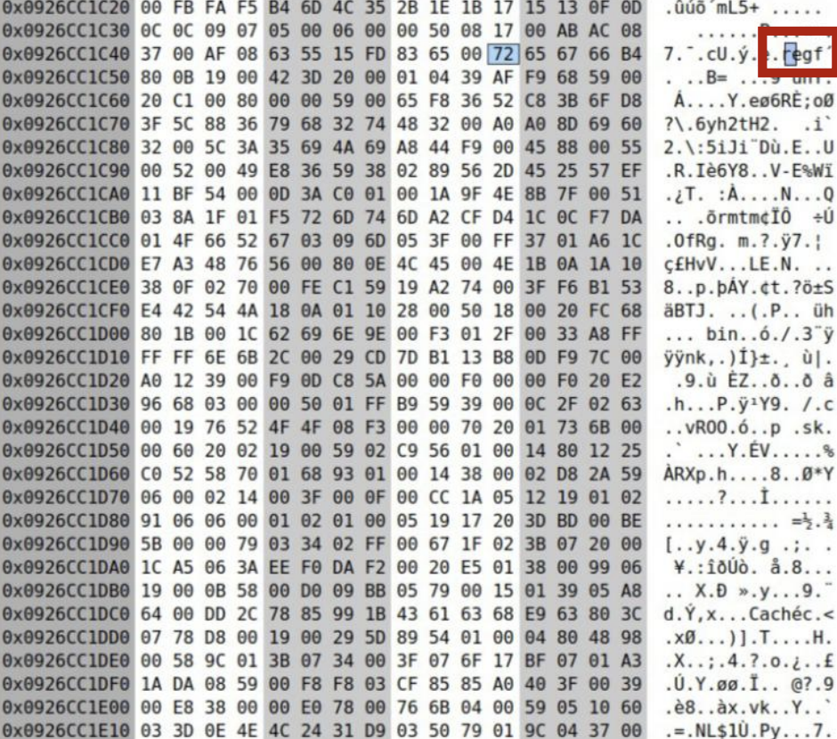
So, how can we specifically find where the SYSTEM hive is in the encrypted volume and where the CrashControl key node is located within it? If you trigger states like clean shutdown, forced shutdown, or reboot after a crash on the same computer, specific blocks in the SYSTEM hive file change. This part can be identified as near the start of the SYSTEM hive. Specifically, after a BSOD reboot, a specific volatile subkey called LastCrashDump is created under CrashControl and disappears after a clean shutdown. At this time, only some fields of the corresponding key node structure change in a predictable way. In other words, by scanning the entire hive, blocks that change exactly according to that pattern can be thought of as the CrashControl key node!
Normal Boot State
Offset Hex bytes (16B) ASCII
0x0056e2f0 a0 ff ff ff 6e 6b 20 00 ad 71 01 42 ed f0 da 01 ....nk ..q.B....
0x0056e300 03 00 00 00 e8 03 00 00 01 00 00 00 00 00 00 00 ................
0x0056e310 28 7b 74 00 ff ff ff ff 0c 00 00 00 38 f4 a7 00 ({t.........8...
0x0056e320 08 bc 46 00 ff ff ff ff 20 00 00 00 00 00 00 00 ..F..... .......
0x0056e330 2c 00 00 00 30 00 00 00 00 00 00 00 0c 00 00 00 ,...0...........
0x0056e340 43 72 61 73 68 43 6f 6e 74 72 6f 6c 00 00 00 00 CrashControl....
Immediately After Crash/BSOD
Offset Hex bytes (16B) ASCII
0x0056e2f0 a0 ff ff ff 6e 6b 20 00 73 62 74 ab 14 f7 da 01 ....nk ..sbt.....
0x0056e300 03 00 00 00 e8 03 00 00 01 00 00 00 00 00 00 00 ................
0x0056e310 28 7b 74 00 c8 8e 01 80 0c 00 00 00 38 f4 a7 00 ({t.........8...
0x0056e320 08 bc 46 00 ff ff ff ff 20 00 00 00 00 00 00 00 ..F..... .......
0x0056e330 2c 00 00 00 30 00 00 00 00 00 00 00 0c 00 00 00 ,...0...........
0x0056e340 43 72 61 73 68 43 6f 6e 74 72 6f 6c 00 00 00 00 CrashControl....
Looking at the two dumps, the first thing that stands out is that the string itself is maintained. In both states, the CrashControl string remains at line 0x0056e340. In other words, it is not a situation where the text CrashControl disappears and cannot be found, but a state where some fields inside the structure describing CrashControl change. It is not that the whole thing is swapped, but only some fields of the structure change selectively. And this becomes a strong clue that we are looking at a structure with some meaning, not a random dump.
Offset Hex bytes (16B) ASCII
0x00000000 9c 1e d1 7a 39 39 d4 13 0c d4 40 c5 a8 6f c4 de ...z99....@..o..
0x00000010 e0 79 bc 2d dd 66 e2 25 b0 48 0f 58 53 2f 06 5d .y.-.f.%.H.XS/.]
0x00000020 74 ac c3 51 86 9e 74 64 e2 d9 6e d0 9c 11 ee 4d t..Q..td..n....M
0x00000030 03 40 03 52 05 e0 bc 37 41 c1 3f a2 7e 2a 09 84 .@.R...7A.?.~*..
0x00000040 24 80 dc b8 6a 20 c8 81 2d c6 61 30 39 9f 30 51 $...j ..-.a09.0Q
0x00000050 31 1b 0c 74 80 96 8c f2 ad 9d 28 26 f9 ce 8d 16 1..t......(&....
0x00000060 1c 23 fd d1 08 45 f0 c1 84 bb e5 84 bf b6 73 17 .#...E........s.
0x00000070 f0 e3 50 f2 7c 35 7b 91 bd e5 5e b3 a7 4d 4c bf ..P.|5{...^..ML.
0x00000080 db f0 de 96 ba 50 d9 09 3d 83 b2 fb 1a f4 35 aa .....P..=.....5.
Offset Hex bytes (16B) ASCII
0x00000000 48 49 42 52 09 00 00 00 33 c0 00 00 d8 04 00 00 HIBR....3.......
0x00000010 04 3e 0a 00 00 00 00 00 00 10 00 00 00 00 00 00 .>..............
0x00000020 3e 73 b2 1f 2b f7 da 01 3e 1d 07 2a 00 00 00 00 >s..+...>..*....
0x00000030 ff bd 9b bd 7f a4 5f 06 01 ca 00 00 0a 00 00 00 ......_.........
0x00000040 00 30 44 a8 80 c2 ff ff 00 00 14 00 4e 21 00 00 .0D.........N!..
0x00000050 61 d7 00 00 00 00 00 00 34 54 00 00 00 00 00 00 a.......4T......
0x00000060 00 00 00 00 00 00 00 00 2c 00 00 00 00 00 00 00 ........,.......
0x00000070 7c 13 00 00 00 00 00 00 fc 57 02 00 00 00 00 00 |........W......
0x00000080 a7 bf 12 00 00 00 00 00 82 99 a9 68 02 00 00 00 ...........h....
Comparing the raw sectors before and after the exploit: before the exploit, a byte sequence that looks random due to the nature of ciphertext is observed. However, after the exploit, we can observe the hibernation header starting with the HIBR signature exactly as it is! In other words, we can confirm that dump/hibernation data is exposed in an unencrypted form in the special path.
2.4 Reliability vs. Randomization
The core of probabilistic vulnerabilities like CrashXTS is corruption through lack of integrity. However, this reaction varies easily depending on the Windows system, version, and state, making it difficult to actually induce. Even with the same Windows version, the internal structure of the registry hive and file layout vary depending on installation history, update history, and driver installation/removal. Therefore, differential analysis must be performed from scratch for every system, making automation of this process virtually impossible. Also, even if BitLocker policies change, already encrypted blocks are not re-encrypted; however, since the layout itself changes depending on operation history, a problem arises where an attack location that succeeded once may not work at all on another system.
3. Conclusion
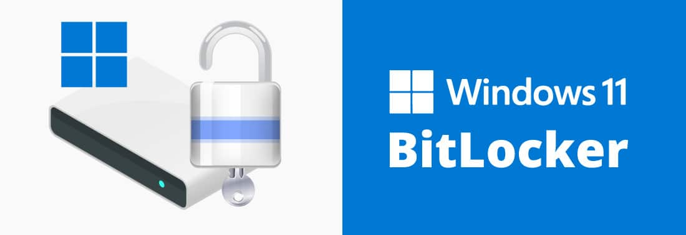
CrashXTS empirically demonstrated the fundamental limitations of XTS, but it is somewhat limited in terms of practicality. Therefore, for BitLocker, rather than causing corruption of the encryption mode block itself, let's look into exploits using logical flaws such as WinRE verification omissions, recovery path defects, and key management errors.
References
- https://dfir.ru/wp-content/uploads/2025/01/crashxts.pdf
- https://csrc.nist.gov/csrc/media/projects/block-cipher-techniques/documents/bcm/comments/xts/follow-up_xts_comments-ball.pdf
- https://dfir.ru/2025/01/20/cve-2025-21210-aka-crashxts-a-practical-randomization-attack-against-bitlocker/
- https://msrc.microsoft.com/update-guide/vulnerability/CVE-2025-21210
- https://www.iaesjournal.com/windows-bitlocker-bug-leaks-aes-xts-encryption/